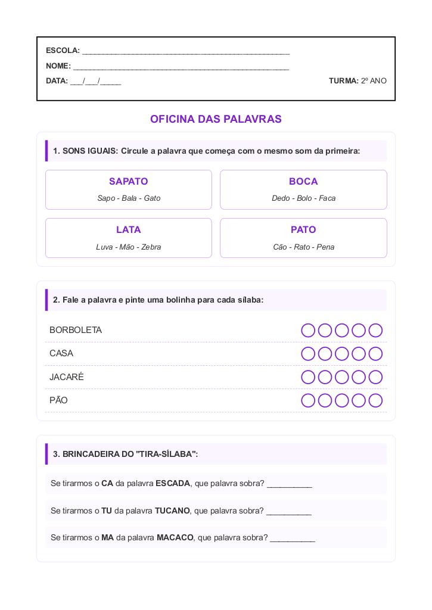

← Voltar ao Portal
ESCOLA:
_________________________________________________
NOME:
___________________________________________________
DATA:
___/___/_____
TURMA:
2º ANO
Atividade de Exercicios Consciencia Fonologica – 2º Ano do Ensino Fundamental
1. SONS IGUAIS: Circule a palavra que começa com o mesmo som da primeira:
SAPATO
Sapo - Bala - Gato
BOCA
Dedo - Bolo - Faca
LATA
Luva - Mão - Zebra
PATO
Cão - Rato - Pena
2. Fale a palavra e pinte uma bolinha para cada sílaba:
BORBOLETA
CASA
JACARÉ
PÃO
3. BRINCADEIRA DO "TIRA-SÍLABA":
Se tirarmos o
CA
da palavra
ESCADA
, que palavra sobra? __________
Se tirarmos o
TU
da palavra
TUCANO
, que palavra sobra? __________
Se tirarmos o
MA
da palavra
MACACO
, que palavra sobra? __________
4. DESAFIO DA CORUJA:
Escreva uma palavra que rime com
SABEDORIA
:
Resposta: ___________________________
🦉
Visualização da Folha de Atividade
